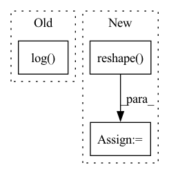

Pattern ID :18859

Before Change
def logsoftmax(self):
ns = list(self.shape)[:-1]+[1]
// TODO: logsumexp stability with max
ss = self.exp().sum(axis=len(self.shape)-1).reshape(shape=ns).log()
return self - ss
def dropout(self, p=0.5):
// TODO: this needs a test
After Change
def logsoftmax(self):
ns = list(self.shape)[:-1]+[1]
m = self.max(axis=len(self.shape)-1).reshape(shape=ns)
ss = m + (self-m).exp().sum(axis=len(self.shape)-1).reshape(shape=ns).log()
return self - ss
def dropout(self, p=0.5):
In pattern: SUPERPATTERN
Frequency: 3
Non-data size: 3
Instances
Fragment ID: 61296611
Project Name: geohot/tinygrad
Commit Name: 27208d729ba13de5ea3abedad5cbdbf56adffee2
Time: 2020-12-29
Author: geohot@gmail.com
File Name: tinygrad/tensor.py
M Class Name: Tensor
N Class Name: Tensor
M Method Name: logsoftmax(1)
N Method Name: logsoftmax(1)
M Parent Class:
N Parent Class:
M File Name: tinygrad/tensor.py
N File Name: tinygrad/tensor.py
M Start Line: 235
M End Line: 235
N Start Line: 234
N End Line: 235
'>
Before Change
return e.div(ss)
def logsoftmax(self):
return self.softmax().log()
def dropout(self, p=0.5):
if Tensor.training:
_mask = np.asarray(np.random.binomial(1, 1.0-p, size=self.shape), dtype=self.dtype)
After Change
def logsoftmax(self):
ns = list(self.shape)[:-1]+[1]
// TODO: logsumexp stability with max
ss = self.exp().sum(axis=len(self.shape)-1).reshape(shape=ns).log()
return self - ss
def dropout(self, p=0.5):
'>
Fragment ID: 61296610
Project Name: geohot/tinygrad
Commit Name: ea341c84fe31e2ed63ade178e86e7f64f6d2f499
Time: 2020-12-29
Author: geohot@gmail.com
File Name: tinygrad/tensor.py
M Class Name: Tensor
N Class Name: Tensor
M Method Name: logsoftmax(1)
N Method Name: logsoftmax(1)
M Parent Class:
N Parent Class:
M File Name: tinygrad/tensor.py
N File Name: tinygrad/tensor.py
M Start Line: 236
M End Line: 236
N Start Line: 236
N End Line: 239
'>
Before Change
@with_context()
def mix(ctx: Context, inp: jnp.ndarray) -> jnp.ndarray:
original_shape = inp.shape
items = math.ceil(math.log(ctx.dims.sequence, ctx.dims.spatial_mixing_kernel))
samples = 2 ** (int(math.log2(ctx.dims.sequence)) // items)
inp = inp.reshape(ctx.dims.batch, -1, ctx.dims.spatial_mixing_kernel, ctx.dims.features)
inp = inp.transpose(0, 3, 1, 2)
After Change
inp = matmul(inp, wgt)
for _ in range(len(weights)):
inp = inp.transpose(0, 1, 3, 2)
inp = inp.reshape(*shape)
return inp.transpose(0, 2, 3, 1).reshape(original_shape)
'>
Fragment ID: 61296601
Project Name: homebrewnlp/homebrewnlp-jax
Commit Name: bfe53eb59aee047d89cd71559ff88ff3db2ff840
Time: 2022-08-31
Author: 39779310+ClashLuke@users.noreply.github.com
File Name: src/model/mixer.py
M Class Name: AnonimousClass
N Class Name: AnonimousClass
M Method Name: mix(2)
N Method Name: mix(2)
M Parent Class:
N Parent Class:
M File Name: src/model/mixer.py
N File Name: src/model/mixer.py
M Start Line: 15
M End Line: 31
N Start Line: 15
N End Line: 36